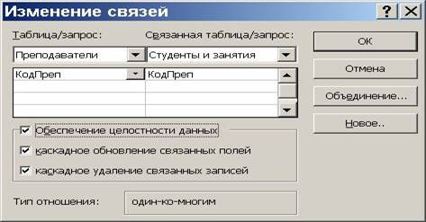
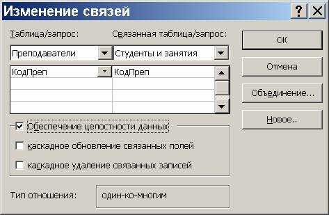
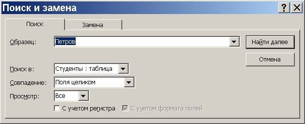
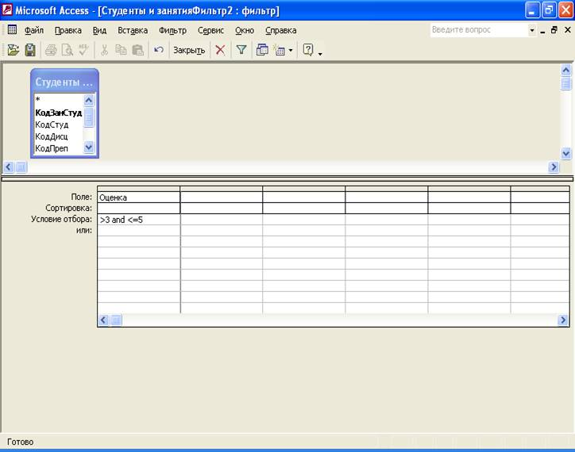

Лабораторная работа № 3. MS Access. Ввод и редактирование данных в режиме таблицы
Цель
занятия: изучить использование
форматированных полей, масок ввода, порядок удаления записей, сортировку информации,
поиск и замену информации, фильтрацию записей с помощью фильтра по выделенному,
обычного и расширенного фильтра.
Порядок
выполнения - на основе лекционного
материала и контекстной помощи MS Access выполнить и описать порядок
выполнения следующих пунктов задания:
1. Открыть БД, разработанную на
предыдущем занятии.
2. В таблице «Студенты»
отработать основные приёмы форматирования текста, приобретённые в ходе изучения
MS Word. Особое внимание обратить
на невозможность восстановления удалённых записей и полей после подтверждения
своего решения кнопкой «Да».
3. Открыть Схему данных. С помощью правой
кнопки мыши вызвать диалоговое окно Изменение связей для связи по коду
преподавателя между таблицами «Преподаватели» и «Студенты и занятия» и
установить ключи в соответствии с рис. 32.1.

Рис. 32.1
4. Добавить новые взаимосвязанные записи в таблицу
«Преподаватели» и в таблицу «Студенты и занятия».
5. Стереть запись в таблице «Преподаватели». Выяснить
реакцию на эту операцию таблицы «Студенты и занятия».
6. Выполнить пп.4, 5 для случая, когда связь между
указанными таблицами установлена с параметрами, показанными на рис. 32.2.

Рис. 32.2
7. Открыть таблицу «Студенты» и упорядочить записи по
возрастанию по фамилиям студентов. (выделить поле «Фамилия студента» и
выполнить последовательность команд Записи – Сортировка – Сортировка по
возрастанию, либо нажать кнопку Сортировка по возрастанию на панели
инструментов).
8. Организовать поиск студента по заданной фамилии в
таблице «Студенты»: команды Правка – Найти. Результат – окно диалога,
представленное на рис. 32.3.

Рис. 32.3
По
умолчанию поиск будет организован в поле, где до указанных команд находился
курсор (текущее поле). Для поиска по всем полям необходимо указать имя таблицы.
Последствия
выбора различных значений из списка Совпадение:
Таблица 32.1
|
Значение
из списка совпадение |
Критерий
совпадения |
Пример |
Совпадает |
Не
совпадает |
|
С
любой частью поля |
Текст
может находиться в любом месте поля |
ром |
Романов кроме
паром ром |
|
|
Поля
целиком |
Введённый
текст должен соответствовать всему полю |
ром |
ром |
Романов кроме паром |
|
С
начала поля |
Текст
должен находиться в начале поля, но в конце поля может содержаться
дополнительная информация |
ром |
Романов ром |
кроме паром |
9. Воспользовавшись закладкой Замена предыдущего меню
организовать замену одной фамилии на другую.
10. В таблице «Преподаватели» произвести фильтрацию,
оставив на экране только преподавателей в должности доцент, используя фильтр по
выделенному: щёлкнуть в любом месте интересующих поля и записи или выделить
интересующее содержимое, затем выполнить команду Записи – Фильтр – Фильтр по
выделенному, либо нажать кнопку Фильтр по выделенному на панели
инструментов.
11. Вернуться к просмотру всех записей, выполнив команды Записи
– Удалить фильтр или щёлкнуть кнопку Применение фильтра на
панели инструментов.
12. Произвести фильтрацию по имени и отчеству в таблице
«Студенты» (выделить перед фильтрацией данные двух соседних полей).
Примечание:
для фильтрации по несмежным полям вначале сгруппировать нужные поля методом
перетаскивания.
13. Использование обычного фильтра. Открыть таблицу
«Студенты». Выполнить команду Записи – Фильтр – Изменить фильтр
или нажать кнопку Изменить фильтр на панели инструментов.
Указать в полях те значения, по которым должна
происходить фильтрация (например, по определённому номеру учебной группы).
Нажать кнопку Применение фильтра.
Произвести дополнительную фильтрацию (например, по
имени Степан), воспользовавшись командой Изменить фильтр и введя
соответствующую информацию в поле Имя. Выполнить предыдущее действие, добавив
фильтрацию по полю Имя, но перед этим щёлкнув на ярлычке Или в нижней части окна
диалога Фильтр.
Примечание:
при работе с обычным фильтром не существует возможности поиска значений из
заданного диапазона. Например, нельзя найти товар с ценой выше 20 ед, но ниже
40 ед. В таких случаях следует пользоваться Расширенным фильтром либо
запросами.
14. С помощью Расширенного фильтра (команда Записи
– Фильтр – Расширенный фильтр) произвести фильтрацию в таблице «Студенты
и занятия» в поле «Оценка» по условию: >3 , но <=5 (рис. 32.4).

Рис. 32.4